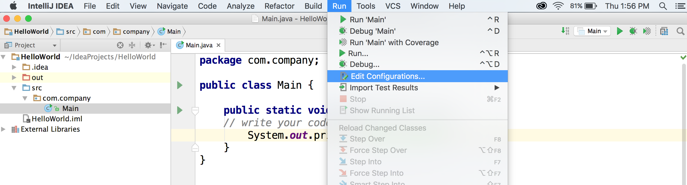

16. Hello World in IntelliJ
Setup an IntelliJ Project
Now that we’ve downloaded IntelliJ, let’s take a look at how to use it. Below are the text instructions for creating a Hello world program in IntelliJ!
1. Open IntelliJ
When you first open IntelliJ, you’ll see this welcome screen and options to create a new project, import, or open a project.
You’ll be starting a project from scratch, so choose Create New Project.

2. Select the Java SDK
Next IntelliJ should show a window that asks for the Java SDK we want to use for our project. This is why we needed to install a java development kit beforehand, so that we can use it in our development environment here!
IntelliJ may have automatically found the correct JDK, and if it did, the Project JDK field should look like this:
But if this field is blank, you can search for the version you want to use (Java 8)!
To find the correct JDK, click New.. to the side of the “Project JDK” text box and your computer should automatically search for the correct java folder.
The JDK you are looking for should be called something like jdk_1.8_..
And the folder that IntelliJ is interested in is the jdk1.8_.. > Contents > Home folder. This is where IntelliJ can find our java compiler and other developer tools.

Once you have the correct version of Java selected, click Okay and you'll return the the New Project Window.
In this same window, IntelliJ also asks for any external libraries or frameworks, which are collections of Java code and functions that someone else has written. We’ll just be using functions that Java already has built-in, so we aren’t going to need any external code, so let’s leave these unchecked and click Next.
3. Select Command Line App Template
Next, IntelliJ will ask if you’re using a template. And you will!
We only have one option here called the Command Line App. So select that option and click Next.
And remember Command Line is another word for the terminal or command prompt and this template will include some starting code that will make it easier to write, compile, and run our own code.
Note: If you forget to click this template in future, don’t worry, you can always manually type in any code that you need later.
4. Name Your Project
Next you’ll be asked to give your project a name, and it’s always a good idea to give a simple, descriptive name.
You’ll be writing a simple Hello World program that prints out “Hello world!” to your computer screen, so name this project HelloWorld.
In this window, you’ll also see the Project Location and Base Package.
The Project Location is where all of your IntelliJ projects will be saved. IntelliJ creates a convenient Project folder for us, so keep this the way it is.
The Base Package is named com.company and you can leave this as is. The only time you would change the package name is if you were creating an application to distribute to the web or a mobile device.
So, once you’ve named your project, click Finish.
IntelliJ Environment and Hello world!
Now that you've setup a project, let's look at the IntelliJ environment and start coding!
1. IntelliJ Environment
Now that we’ve set up our Hello World project, we should be able to see our IntelliJ environment, which is this split screen.
On the left we have our project layout that shows our main project folder named Hello World and a bunch of other folders inside this one that will hold our code.
Expand this folder to HelloWorld > src > com.company.
Seen on the left side of the image below.
The src folder is short for source, which refers to the source code or main code of our program. And inside here is the package our code is held in, com.company, and then we have something called Main inside here.
Main is a class file and you’ll learn more about classes when we talk about objects later, but for now know that all the code and functions you write will be inside classes.
And in fact, on the right side of the screen is all the code in that’s in our Main class.
2. Main class, main function
Inside the Main class, is something called the main function. Whenever you write a program, your computer needs to know where to start running your code, and by default it will always start at this main function.
So inside this function is where you’ll place all the lines of code you want to execute, like println’s or function calls.
The main function.
3. Hello, world!
For this program you just want to execute a line of code that prints out “Hello world!”, and you can do that just by writing a simple println statement inside of main.
And once you write new code, it's always good practice to save it (File > Save or cmd/ctrl + s).
4. Edit Configurations
And we have one more thing to check before we run this program! Click on the Run tab and go to Edit Configurations.
 Edit configurations" />
Then this window pops up and you should see these four filled in fields.
- First is the name of the Main class that you want to run.
- Second is the working directory, which is where you are saving this project.
- Third is the classpath of your module, which should have your project folder selected (the folder named Hello World).
- And fourth is the version of the Java Runtime Environment that you’re running, which should be version 8 that you’ve downloaded.
Great! this information is usually filled in automatically, but it’s always good to double check and correct things if they are not correctly filled in. So press Okay here and we’ll go back to our program screen!
5. Run Your Program!
Now let’s run this! We can run this program by clicking this play button at the top right of our screen or selecting Run > Run 'Main' from the top toolbar. Both options do the same thing and are shown below.
And you can see that a third window pops up at the bottom of your screen! This is called a console, and this is where all of your print statements will print out. So whenever you write System.out.println() in your main function, the lines will print out here in the order that they are called in your main function.
And IntelliJ will automatically compile our code before you run it, so if you go in and change the print statement to Hello Java! You can just save this code and run it again!
Congrats on completing your first Hello World program in IntelliJ! I’d recommend adding onto this program with a few lines of code of your own. Try adding two numbers and printing out that value, or displaying a message of your own.
This is the best way to get familiar with it and comfortable writing programs on your own computer!